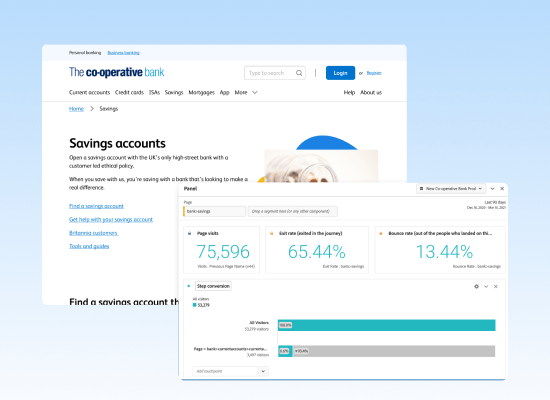

Co-op Bank payments
Payments gets over 800,000 visits a month. This case study looks at how we redesigned one of the bank's core services.
Overview
The payment flow is one of the Co-op Bank's core experiences with hundreds of thousands of people using it every month. It must cater to both first-time users and those who use it several times a week.
The existing flow had remained largely unchanged for over 5 years. There were also significant differences in the experience depending on the platform a customer was making a payment.
The design team explored a new flow that simplified the experience and unified the payment flow across different platforms.
Team
Designer (me), 2 product owners, 2 UX researchers, 1 content designer, 1 product designer, 3 engineers.
Role
Product design, research, testing.
Screenshots of existing payment screens on web and mobile apps.
Problem
On the face of it, the payment flow is just a basic form. Users would enter the necessary details and submit them to make a payment. We had an opportunity to elevate it beyond that to bring it more in line with industry standards.
We conducted some initial usability testing to baseline the current experience. The payment flow performed relatively well with some existing customers. Customers who banked elsewhere, however, felt it was 'clunky' and 'outdated'.
There was also an opportunity to align our technical architecture across platforms. This meant the tech team could use the same microservices for both platforms over maintaining separate ones for the same service.
Finally, we had to implement a regulatory feature (confirmation of payee) that facilitated safer payments. At the time of design there were no industry standards for this service.
Hypotheses
The team got together and came up with a main hypotheses to test:
If we break the flow into smaller chunks, we will reduce cognitive load and simplify the payment process for new and repeat users. We planned on validating this hypothesis using qualitative usability testing initially.
Competitor analysis
Our researcher carried out a competitor analysis to find out how other banks handled payments. There wasn't much variance in the industry in regards to the general steps to make a payment. Stand-out payment journeys focused on good interaction design to improve the journey. We used the analysis to benchmark our redesign against.
Task analysis
To better understand the current payment flow, we mapped every step a user currently goes through to complete their goal. We opted for a task analysis because it showed every activity from beginning to end. This way we could demonstrate the complexity of the existing payment flow and seek out opportunities on a more granular level.

Task analysis of paying a new payee.
Confirmation of Payee (CoP)
CoP is a name-checking service that makes sure payments are being sent to the right account. It verifies a person's details with that person's bank and flags incorrect details. The purpose is to stop certain types of payment fraud.
The implication from a project perspective was integrating this step into the payment flow. We iterated on this step the most, even testing with people who were victims of fraud to get their feedback.
New user flow
Following the research, the team mapped user flows for the different payment services. There were a few different scenarios we needed to design for:
- Paying a new payee,
- Paying an existing payee,
- Transferring money between accounts,
- Paying off a credit card,
- Scheduling a payment.
Our new user flow broke the service into smaller more logical steps. Each step focused on one aspect of the service. This meant we could design each scenario from a collection of predefined steps.

Redesigned user flow.
Prototyping
With a preliminary set of scenarios to assess, we set about creating a prototype for usability testing. We mocked everything up in Figma and used that for usability testing.
Given the basic nature of Figma prototypes, we adjusted our expectations for what we wanted to get from the first round of testing. We looked at things like comprehension, ease of task and how secure people felt the service was.
A mockup of the new payment flow.


A selection of mockups on mobile and desktop.
Usability feedback
In all, the team conducted three rounds of usability testing with 18 users. We tested with a similar demographic as the baseline test. The findings were positive:
- Task success — 100%
- How easy users found the task — 8/10
- How secure users found the task — 8/10
We took the results with a pinch of salt, given their subjective nature and the relative simplicity of the prototype. It did, however, give us enough confidence to move forward with our concept.
Results and learning
Overall we were happy with the results. The project took around 6 weeks from beginning to end. Going through multiple rounds of usability testing helped validate and reduce the risk of our design decisions. It also gave the business peace of mind that this pretty sizeable redesign was the direction to go.
Some of our main takeaways:
- Breaking the payment flow into smaller parts helped scale the service to different platforms.
- The component nature of the approach helped engineers develop a cleaner back-end solution.
- The redesign brought the payment service in line with industry conventions.
- CoP increased user agency during the payment process.
In closing
Having the opportunity to redesign our payment service was a rewarding experience for many reasons. Having multiple rounds of usability testing also let move fast and make decisions without having to through the usual bureaucratic process.
We were also able to simplify one of the bank's core experiences and laid the foundation for new functionality to be added in future iterations.
More case studies
-  Measuring UX at Co-op bank Case study
-
 Quantifying a new IA Case study
Quantifying a new IA Case study
-
 Building a design system for the Co-op Bank Case study
Building a design system for the Co-op Bank Case study